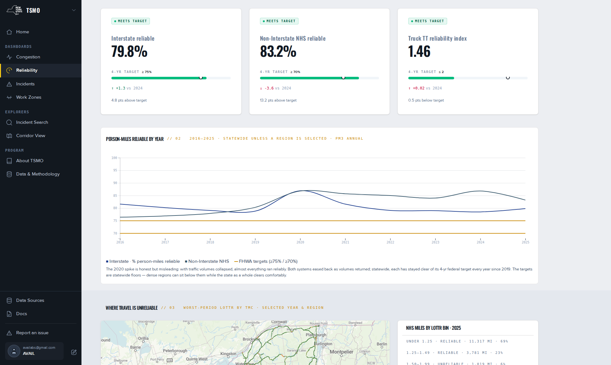

Reliability dashboard.
The federal PM3 reliability measures for New York against their targets: how consistent travel times are, not how long they take. The same measures NYSDOT reports to FHWA under MAP-21, so they are annual. What each panel shows, on what basis, and how it is computed.
What this page answers
"How predictable is travel." Whether New York meets the three federal reliability targets, how the share of reliable person-miles has moved since 2016, where the least reliable segments and corridors are, and how the Interstate, the non-Interstate NHS and trucks compare.
Filters
Year and Region. The bar reads LOTTR threshold 1.50 · periods AM / Midday / PM / Weekend and no region selected = statewide. No system or vehicle-class control: the systems are separate cards and each measure's class is fixed by federal definition. See Using the filter bar.
Three of three federal targets met
The compliance band for the 2022–2025 performance period. Three cards against their targets: reliable Interstate person-miles, reliable non-Interstate NHS person-miles, and the truck travel-time reliability index. FHWA counts a measure as making significant progress when it meets its target or beats its baseline.
For CY 2025, statewide, computed on the platform from the MAP-21 dataset: 79.8 % Interstate against ≥ 75 %, 83.2 % non-Interstate against ≥ 70 %, TTTR 1.46 against ≤ 2.00. The TSMO home cites the FHWA resubmission instead, 80.0 % and 83.3 %; the CY 2025 figures explains the two bases.
How it is computed. LOTTR is how much longer a bad trip takes than a typical one: the 80th-percentile travel time divided by the 50th, per segment per period. A segment is reliable when every period stays below 1.50, and the card reports the share of person-miles on reliable segments. See LOTTR. TTTR is the same question for freight at the 95th percentile, rolled up as a length-weighted Interstate index. See TTTR.
Person-miles reliable by year
Two lines, 2016 to 2025, Interstate and non-Interstate NHS, with the two target rules drawn at 75 % and 70 %. Statewide unless a region is selected.
- The chart shows every year whatever Year says. LOTTR is a calendar-year measure with no monthly form; the year selects the cards, not the trend.
- The 2020 spike is real but misleading: with volumes collapsed, almost everything ran reliably. Both systems eased back as volumes returned and have stayed above target since 2019.
- The targets are statewide floors. A dense region can sit below one while the state clears it. No regional target exists.
Where travel is unreliable
Every segment coloured by its worst-period LOTTR for the selected year and region, with the NYSDOT region boundaries. Bins: under 1.25, 1.25–1.49, 1.50–1.99, 2.00 and above, no data. A card beside it gives the mileage in each bin.
- Worst period means the highest of the four period ratios, AM, Midday, PM and Weekend. There is no period picker.
- Both directions of a segment draw side by side. Year selects the network vintage; Region zooms the map to the region.
Least-reliable corridors
A table of corridors ranked by worst-period LOTTR for the selected year. Below it, two cards put the Interstate and non-Interstate figures side by side with the truck TTTR figure.
How reliability is measured
The method note at the foot of the page. LOTTR is computed per segment for weekday AM 06:00–10:00, Midday 10:00–16:00, PM 16:00–20:00 and Weekend 06:00–20:00, reliable below 1.50 in every period. Person-miles weight each segment by traffic count, an occupancy of 1.7 and length. TTTR adds Overnight 20:00–06:00 and takes each segment's worst period. Both are defined at 23 CFR 490 subparts E and F. The 2024 submission is final; 2025 publishes after the federal cycle closes.
Downloads
No download control on the page. Data & Methodology › Downloads & API lists the PM3 bulk tables. Figures per MPO and county are on the MAP-21 PM3 reporting pages.

References
- TSMO Reliability dashboard, published 2026-07-17: filter-bar labels, band titles, trend legend and caption, method note.
- Reliability page build record: CY 2025 79.8 % · 83.2 % · 1.46, computed on the platform (style guide ruling, 2026-09-04).
- TSMO home design header: FHWA HPMS Travel Time Metrics resubmission, CY 2025, 80.0 % · 83.3 % · 1.46.
- Feedback records 2191486 · 2214490 · 2191744 · 2194999 · 2191485 · 2214482.